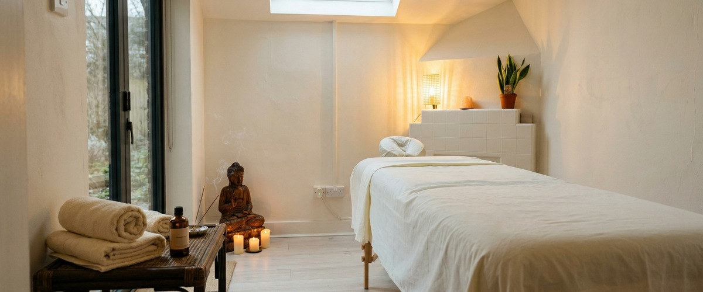
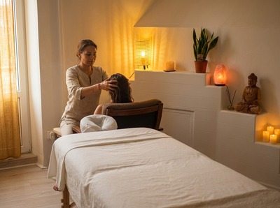
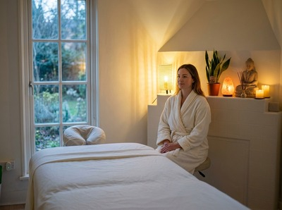

If tension headaches, a tight neck, or a mind that refuses to switch off are part of your daily life, Thai head massage in Glasgow could be exactly what your body needs.

Rooted in traditional Thai healing practice, this focused upper-body treatment works on the areas where stress builds most: the scalp, temples, neck, shoulders, and upper chest.
Thai head massage uses compressions, acupressure, rhythmic movements, and gentle stretching. These techniques are applied across the head, face, neck, and shoulders — working along pressure points and energy pathways rather than the surface alone.

This releases held tension, improves circulation, and calms the nervous system. The treatment is done fully clothed, seated or lying down, making it easy to fit into your day.
The techniques draw from the same principles as traditional Thai massage. Therapists work the body's sen energy lines to restore balance and ease both physical and mental strain.
They use thumbs, knuckles, and palms in a sequence of firm compressions, kneading strokes, and light stretching. These movements cover the scalp, temples, forehead, and the muscles of the upper back and shoulders.
This treatment suits anyone who carries stress in their upper body. Office workers and professionals who spend long hours at a screen often find real relief here. So do people with recurring tension headaches or migraines, and anyone who feels mentally overloaded.
It is also a good starting point for first-time clients at Serendipity. You get the benefits of Thai technique without committing to a full-body session.
Book your session today and start your visit with a brief consultation so your therapist can understand exactly what you need.
Sessions run from 30 to 45 minutes. You stay fully clothed throughout, and no oils are used unless you request them. Your therapist will begin with a short consultation to find out where the tension sits, whether you have any sensitivities, and what you want to feel afterwards.
The treatment moves through the upper back, shoulders, neck, scalp, and face in a measured sequence. Many clients feel a clear shift in tension within the first few minutes.
Afterwards, it is common to feel both calm and clearer-headed. Some people feel lightly tired — a normal response as the body settles. You can be back at your desk, or on your way home, within the hour.

At Serendipity Massage Therapy & Wellness, every therapist is trained to a consistent standard using techniques developed by head therapist Jariya Malone. Whether this is your first visit or a regular appointment, the same care goes into every session.
Our studio is on Hope Street in Glasgow city centre, a short walk from the offices of the financial district. For anyone working nearby, it is a practical way to reset during or after the working day. You can also explore our full range of treatments if you would like to combine this with another service.
No. Thai head massage is performed fully clothed. You will remain seated or lying down throughout, and there is no need to remove any clothing. We recommend wearing something comfortable and loose around the neck and shoulders so your therapist can work freely.
Sessions at Serendipity run from 30 to 45 minutes depending on the treatment you book. This makes it one of our most time-efficient options, fitting into a lunch break or the end of a working day. If you would like a longer treatment, we can combine it with another service.
Most clients leave feeling calm, lighter, and noticeably clearer in the head. It is common to feel a gentle tiredness afterwards as the body processes the release of tension. We recommend giving yourself a few quiet minutes before returning to work, and drinking water after your session.
For those dealing with recurring tension headaches, neck stiffness, or work-related stress, a session every two to four weeks can make a real difference over time. For general stress management, monthly sessions are a practical rhythm. Your therapist can advise on what suits your situation. Book online now to get started.
A standard head massage typically focuses on the scalp alone. Thai head massage works across a wider area: scalp, temples, face, neck, shoulders, and upper chest. It uses acupressure along specific pressure points, rhythmic compressions, and gentle stretching. This makes it a more therapeutic treatment than simple stroking movements.
Many people find Thai head massage helpful for reducing the frequency and intensity of tension-related headaches and migraines. It releases the tight muscles that often trigger them. If you have a diagnosed migraine condition or any neck or head injury, please tell your therapist during the consultation. We can adapt the treatment to suit you. You are also welcome to call us on 0141 673 6630 to discuss before booking.